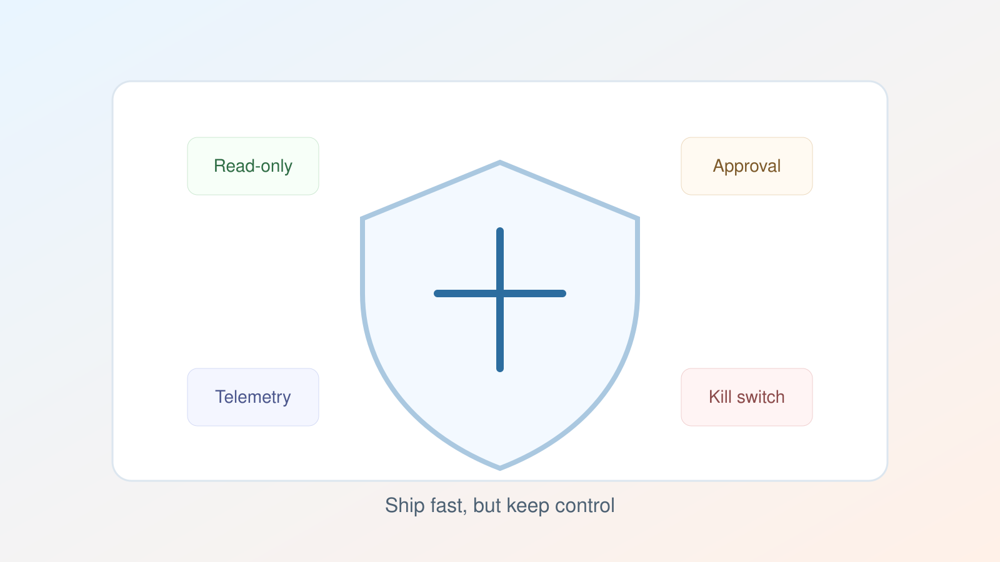

Shipping Agentic AI Without Waking Up On-Call

Agent demos fail safely. Production agents fail at 2:14 AM with real user impact. That is why guardrails need to be designed as first-class system behavior, not post-launch patches.
1) Permission architecture
Separate tools by capability:
- Read-only tools (default)
- Low-risk write tools (auto with policy checks)
- High-risk write tools (human approval required)
Map every tool to a policy tier and enforce it server-side, not in prompt text.
2) Deterministic wrappers around model output
Do not execute free-form model text directly. Parse into strict schemas, validate required fields, and reject invalid payloads with explicit retry logic.
3) Observability you can debug
At minimum, log:
- Request ID and user/session ID
- Prompt version and model version
- Tool call sequence and outcomes
- Token usage, latency, and failure reason
If an incident happens, you should be able to replay one request end-to-end.
4) Fast kill switches
Every production agent needs operational brakes:
- Disable specific tools at runtime
- Downgrade to read-only mode
- Route to manual fallback flow
5) Incident drills
Run a monthly chaos drill: bad tool response, provider outage, and prompt regression. Teams that practice recovery recover faster.
Reliable agentic systems are not built by optimism. They are built by constraints, telemetry, and rehearsed failure handling.